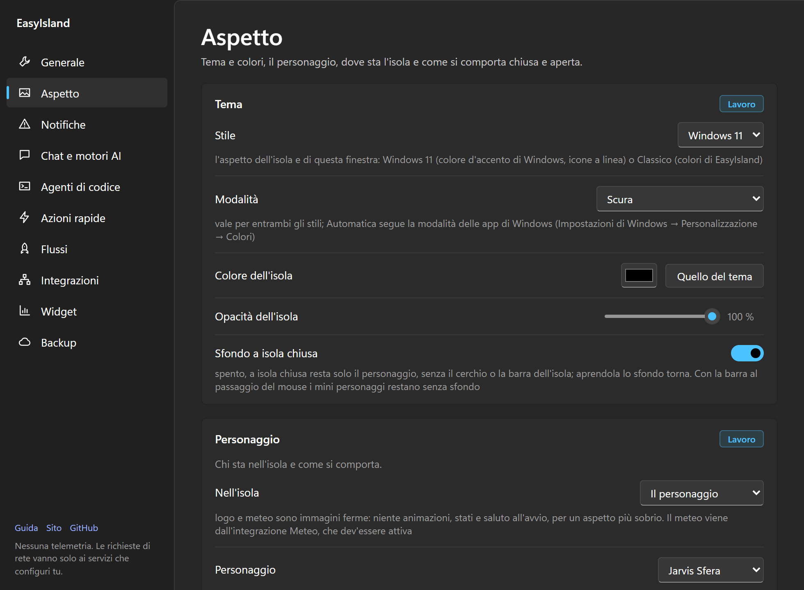
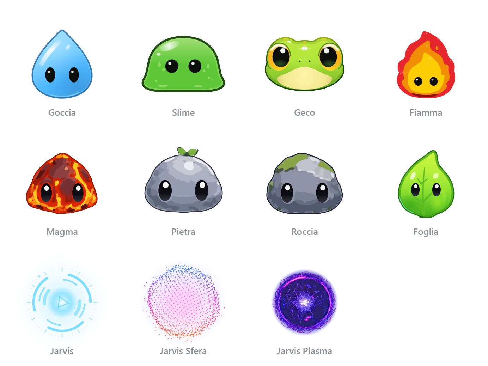

Posizione e aspetto
Stile, modalità chiara o scura, personaggi, dove vive l'isola e come si comporta chiusa e aperta, suoni e lingua.
Tutto in Impostazioni → Aspetto. Le sezioni con l'etichetta viola si salvano nel profilo attivo.

La pagina è divisa in cinque sezioni: Tema, Personaggio, Posizione, Isola chiusa e Isola aperta. I volumi dei suoni sono in Generale, accanto a Suono.
#Tema
- Stile: Windows 11 (predefinito: come le app di sistema, con il colore d'accento di Windows e icone a linea) o Classico (l'aspetto originale con le icone colorate).
- Modalità: Scura (predefinita), Chiara o Automatica (come Windows), che segue la modalità delle app di Windows (Impostazioni di Windows → Personalizzazione → Colori) e cambia da sola quando la cambi lì. Vale per entrambi gli stili, per l'isola e per la finestra delle Impostazioni.
- Colore e opacità dell'isola: «Quello del tema» è il grigio di Windows o il nero del Classico, in chiaro il loro equivalente chiaro; un colore scelto da te resta quello.
- Sfondo a isola chiusa: spento, resta solo il personaggio.
#Personaggio
- Nell'isola: il personaggio, il logo di EasyIsland, il tuo logo o il meteo (vedi sotto).
- Personaggio e il suo colore.
- Saluto all'avvio, al centro dello schermo o dove sta il personaggio.
- Segue il mouse: anche nella vista compatta il personaggio guarda il cursore (consuma un po' di più).
- Fumetto: in alto il personaggio dice cosa succede.
- Personaggio nel menu: grande, medio o piccolo in cima al menu dell'isola aperta.
#Posizione
- Schermo: principale, quello sotto il cursore o quello su cui l'hai trascinato (se viene scollegato torna sul principale).
- Posizione: in alto o in basso, a sinistra, al centro o a destra. L'isola cresce da lì e il contenuto resta allineato a quel lato. Puoi anche trascinare il personaggio dove vuoi; scegliere di nuovo un angolo lo riporta al bordo.
- Sopra la barra: il personaggio può stare anche sopra la barra delle applicazioni.
- Aggancia ai bordi: vicino a un bordo lo sfondo si attacca con gli angoli squadrati.
- Schermo intero: durante video, giochi e presentazioni il personaggio sparisce; i permessi compaiono comunque.
#Isola chiusa
| Opzione | Cosa fa |
|---|---|
| Vista compatta | Il personaggio grande e animato, oppure una barra compatta con le integrazioni come mini personaggi, di dimensione regolabile |
| Sempre visibile | La vista compatta non torna mai all'icona a riposo |
| Icona a riposo | Il personaggio fermo, un pallino del colore dello stato o niente (una striscia invisibile sul bordo), e dopo quanti secondi tornarci |
| Risposte rapide | Permessi, chiamate e riunioni accanto al personaggio chiuso, a destra o a sinistra |
| Barra dell'app in uso | Le tue azioni rapide del programma che stai usando, accanto al personaggio |
| Permessi e chiamate | Aprono l'isola da soli, oppure aspettano accanto al personaggio |
#Isola aperta
| Opzione | Cosa fa |
|---|---|
| L'isola si apre | Dove sta il personaggio, oppure sempre in alto al centro, al centro dello schermo o in basso al centro |
| Apri dopo | Quanto tenere il mouse sopra prima che si apra, o solo con un clic (trascinare un file la apre sempre) |
| Pannello aperto | Dopo quanti secondi dall'uscita del mouse si riduce |
| Resta aperta | Quando la apri tu non si chiude da sola |
| Pulsante chiudi | La ✕ in alto a destra |
| Larghezza e Altezza minima | Fino ai bordi dello schermo (anche trascinando l'angolo in basso); Predefinite riporta a 640 px |
| Campo in alto | Il campo di ricerca nell'isola |
| Come un'app | Icona nella barra delle applicazioni, Alt+Tab, riduci a icona |
#Personaggi
Personaggi disegnati nel codice, tutti con le stesse espressioni:

- Goccia: uno spirito d'acqua azzurro e lucido.
- Slime: gelatina verde che ondeggia.
- Geco: una testa di geco con gli occhi ambrati.
- Jarvis: un nucleo luminoso dentro anelli che girano sempre, come l'interfaccia di un assistente. Niente occhi né mani: parla con ritmo e colori. Al lavoro gli anelli accelerano e intorno al nucleo compare un'onda, in ricerca passa un fascio che scansiona, quando aspetta te pulsa, con un errore tremola, a lavoro finito manda un'onda. Ogni agente al lavoro è un satellite in orbita, l'anello esterno segna i secondi e gli anelli si inclinano verso il mouse. Prende il colore del tema o dell'integrazione aperta.
- Jarvis Sfera (predefinito): lo stesso assistente come una sfera di punti la cui superficie ondeggia come un suono, fredda in alto e calda in basso. Stessi ritmi per stato, satelliti e inclinazione verso il mouse.
- Jarvis Plasma: un globo al plasma blu e viola, senza bordo netto: una gabbia di filamenti sottili e ondulati, una rete di filamenti all'interno che cambia di continuo, un nodo luminoso al centro e archi morbidi blu e magenta. Al lavoro i filamenti si moltiplicano e corrono, quando aspetta te il nodo pulsa. Si vede bene anche sull'isola chiara.
- Fiamma: una fiammella a strati che ondeggia.
- Magma, Pietra, Roccia: sassolini con grandi occhi (lava, germoglio, muschio).
- Foglia: una foglia lucida con le venature.
Il personaggio reagisce: saluta all'avvio, festeggia quando un agente finisce, si preoccupa per un errore, ti guarda quando passi con il mouse. Durante il meteo può avere il cielo dietro.
#Logo o meteo al posto del personaggio
In Personaggio → Nell'isola scegli cosa sta nell'isola: il personaggio, il logo di EasyIsland, il mio logo o il meteo. Logo e meteo sono immagini ferme: niente animazioni, stati e saluto all'avvio, per un aspetto più professionale.
- Il mio logo: Carica PNG… e scegli l'immagine (meglio con lo sfondo trasparente). Viene ridotta a 512 px, resta su questo PC ed entra nel backup. Togli la cancella; senza immagine compare il logo di EasyIsland.
- Il meteo: il cielo e la temperatura di adesso, dall'integrazione Meteo, che dev'essere attiva.
#Suoni
Tutti i suoni sono generati nel codice, nessun file audio: tre volumi separati per avvisi, interfaccia ed emozioni del personaggio, in Impostazioni → Generale. Si silenziano in un clic con la scorciatoia «suoni sì / no».
#Lingua
Impostazioni → Generale → Lingua: come Windows, italiano o inglese. Vale dal riavvio (offerto con Riavvia ora); anche la chat risponde in quella lingua, a meno che tu non le scriva in un'altra.